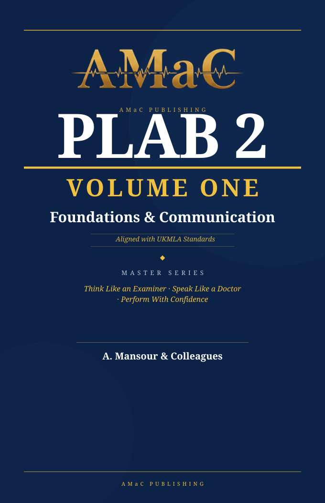
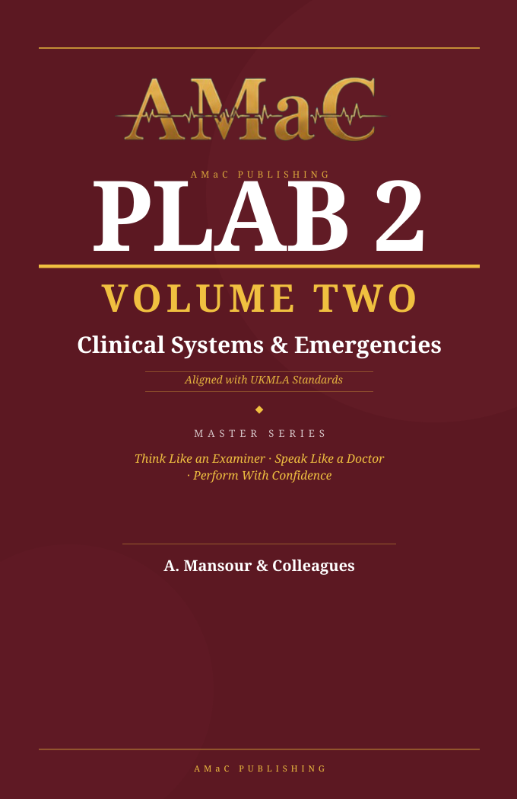
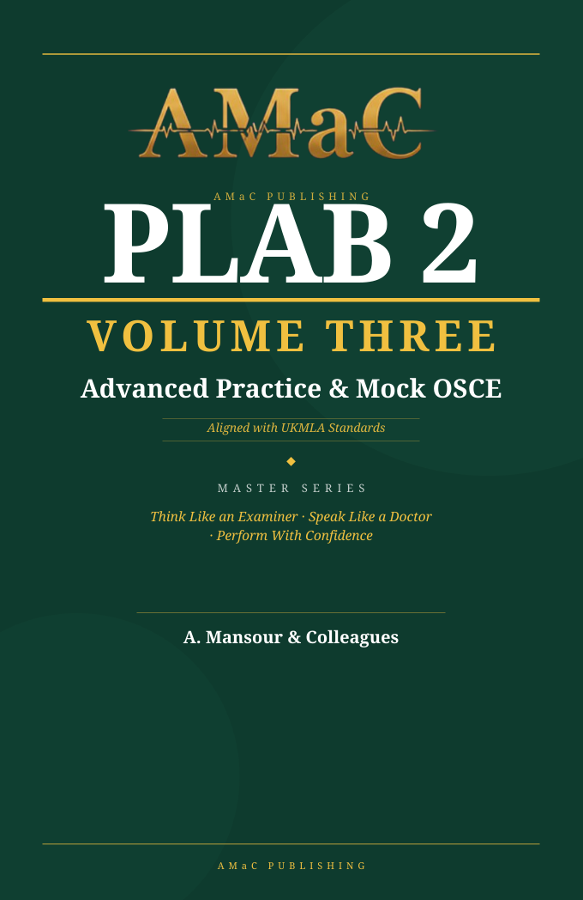
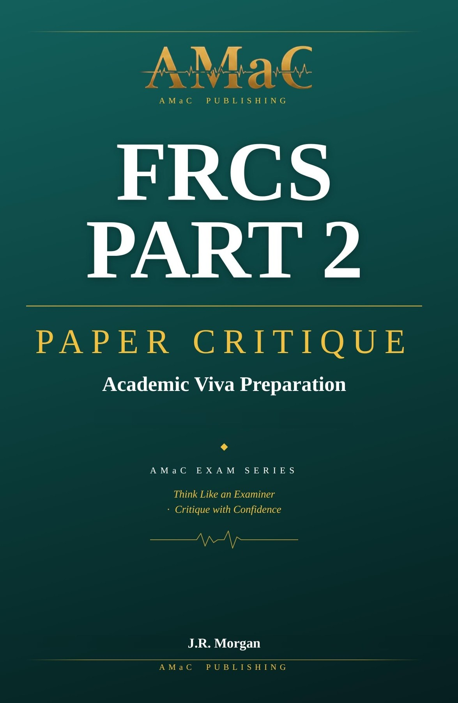

Foundations & Communication
Build the communication, consultation and examination skills that underpin every successful PLAB 2 station — safe habits, structured thinking and examiner-friendly delivery from day one.
- Communication & rapport that earns early marks
- Structured history-taking
- Examination foundations
- Consent & ethics
- Instant-Fail prevention
- Must-Say phrase vault

Clinical Systems & Emergencies
Master the high-yield presentations, emergencies and clinical-system stations most frequently met in the OSCE. Every chapter is built around recognition, management, safety and examiner expectations.
- 30+ clinical-system chapters
- Acute & emergency presentations
- Instant-Fail risk maps
- Examiner checklists
- Top examiner questions
- Women's health & psychiatry

Advanced Practice & Mock OSCE
Transform knowledge into exam-day performance through practical procedures, examination stations, data interpretation and realistic mock circuits that simulate the pressure of the real exam.
- Examination stations
- Practical procedures
- ECG, ABG & imaging interpretation
- Data interpretation & reasoning
- Full mock OSCE circuits
- Curveball prompts & recovery

The Final Fortnight
A focused revision companion for the two weeks before PLAB 2 — every examiner expectation, high-yield script and mark-earning move distilled into one concise crammer.
- High-yield scripts by station type
- Rapid recall frameworks
- Examiner tips & instant-fail alerts
- Top examiner questions & model answers
- Final-fortnight study strategy
Also from AMaC Publishing

The Paper Critique Handbook
The academic viva, taught from the examiner’s chair: a four-pass method for reading any paper in the 30-minute window, statistics from first principles, sixteen chart types decoded, and worked model critiques.
- Four-pass reading method
- Statistics from first principles
- Sixteen chart types
- Bias and study design in plain terms
- Worked model critiques
- 194 pages, full colour
The Complete Examiner-Led System
Not just five books — the full AMaC preparation pathway, from foundations to a timed mock circuit.
- PLAB 2 Master Series + The Final Fortnight
- Interactive flashcards
- OSCE station library
- Question bank
- Mock exam circuits
- Continuous digital access